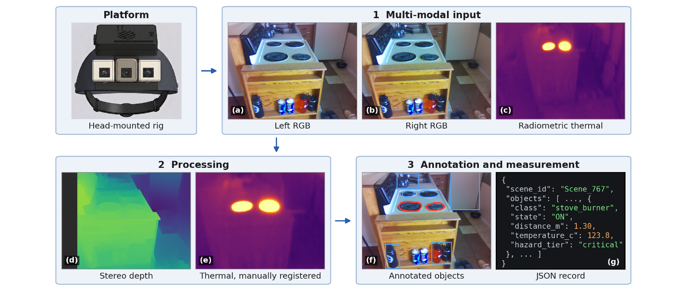
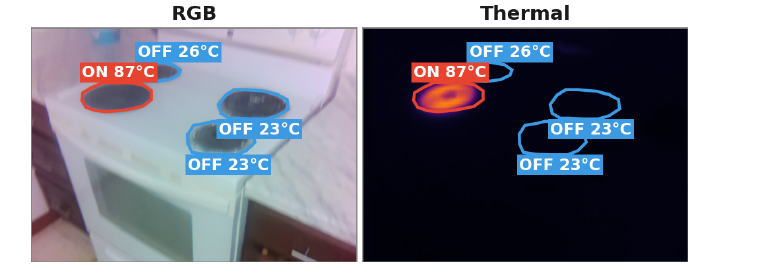
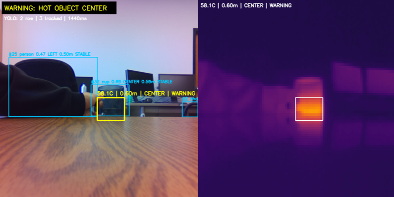

For a blind or low-vision user, identifying whether a stove burner is hot may require approaching it closely enough to feel its heat. RGB and depth support recognition and distance estimation, but neither measures surface temperature, and a hot burner can look like a cold one. We introduce EgoThermal, an egocentric RGB-depth-thermal (RGB-D-T) dataset and benchmark captured with a head-mounted prototype, containing 1,768 indoor scenes and 7,598 objects annotated with metric distance, apparent radiometric surface temperature, and, where applicable, operational state, together with 40,078 rule-generated question-answer pairs.
We investigate how frozen vision-language models (VLMs) use object-associated physical measurements. Across six frozen VLMs, annotation-derived distance and temperature text consistently outperform color-mapped sensor images, providing a controlled comparison of measurement interfaces. In two Qwen models, printing annotation-derived values onto RGB images substantially improves accuracy, while measurements extracted from RGB detector boxes achieve 69.8% and 77.9% accuracy, compared with 47.7% and 57.4% using color-mapped depth and thermal images. For stove-burner ON/OFF labels assigned by annotators with access to thermal imagery, RGB achieves near-chance discrimination (AUROC 0.51), while thermal reaches 0.83. Thermal also improves hazard localization at a 60 °C benchmark threshold. Together, these results support assistive devices that associate sensor measurements with detected objects and provide those values directly to language models.

(1) The head-mounted platform records left and right RGB (a, b) and radiometric thermal (c). (2) On-device processing produces stereo depth (d), and offline registration aligns thermal measurements with the RGB frame (e). (3) Objects are outlined on RGB (f; red: above 35 °C) and stored with scene metadata as a JSON record (g); temperature and distance are measured from the arrays inside each outline.
The prototype pairs a dual IMX219 stereo RGB module (60 mm baseline) with a centrally mounted FLIR Lepton 3.5 radiometric thermal camera (160×120 at 8.7 Hz). A Raspberry Pi 5 performs acquisition, stereo rectification, and depth estimation on-device. Captures span six kitchens plus five living rooms and bathrooms, including 163 fully dark scenes. Two kitchens are held out to test generalization to unseen environments, and the remaining rooms evaluate environment shift.

The four burners look alike in RGB, while thermal clearly separates the ON burner from the three OFF ones. On stove burners, RGB is near chance (AUROC 0.51), while thermal reaches 0.83.
| Input (Faster R-CNN) | Hazard AP50 @ 35 °C | Hazard AP50 @ 60 °C |
|---|---|---|
| RGB | 0.695 | 0.542 |
| RGB + thermal | 0.869 | 0.884 |
Across six frozen VLMs, supplying object-associated distance and temperature as text consistently beats feeding color-mapped depth and thermal images. For example, on questions requiring both distance and temperature, Qwen2.5-VL improves from 0.48 accuracy with rendered images to 0.89 with explicit measurements. Readouts extracted from RGB detector boxes reach 69.8% / 77.9% overall accuracy for the two Qwen models, versus 47.7% / 57.4% with color-mapped sensor images.

RGB detections (left) and thermal observations (right) on the head-mounted prototype. The highlighted region reports an apparent temperature of 58.1 °C and a stereo-derived distance of 0.60 m, triggering a central hot-object warning.
@inproceedings{ghimire2026egothermal,
title = {EgoThermal: An Egocentric RGB-D-T Dataset and Benchmark for Physical Awareness in Wearable Assistive Device},
author = {Ghimire, Bipin and Pokhrel, Aashish and Paudel, Prashanna Mani and Sheshappanavar, Shivanand Venkanna},
booktitle = {TBA},
year = {2026}
}